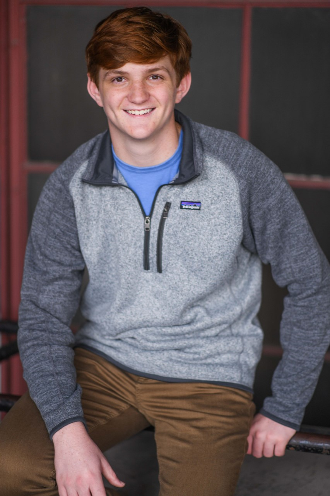

about us
our mission at bison brand is to help provide for the american bison. a species that is not endangered or in danger. but, our passion and love for the animals is stronger than most. we want to make sure that the american bison population stays strong and healthy by selling bison branded clothes and donating 10% of our profits to orginizations that help keep the animals safe.
our goals
- to help maintain the american bison
- to help other endangered species
- to provide amazing high quality merchandise to our customers
buisness owner
the owner of bison brand is luke graban. he is a computer science major at depaul university. he was inspired to start bison brand because of his trip to see the american bison. while luke was on the trip he realized his love for the animals and felt a need to keep the animals alive and strong for as long as they can.
